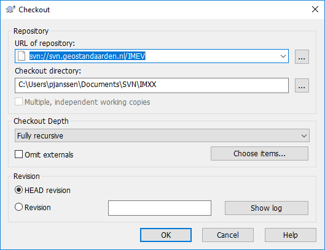

Handleiding voor het installeren van SVN (Subversion) voor een EAP bestand.
UML modellen worden beheerd in Subversion (SVN) op 'svn.geostandaarden.nl'. Dit is een versiebeheertool die kan samenwerken met 'Enterprise Architect' en wordt daarom voor UML modellen gebruik.. Deze handleiding beschrijft hoe je een informatiemodel in de versiebeheeromgeving zet.
Dit document bevat de volgende onderdelen:
- Voorbereiding: Installeer SVN Tortoise vraag een account aan.
- Folder aanmaken op SVN-server.
- Lokale folder aanmaken.
- Lokale folder koppelen aan folder op SVN-server.
- Breng EAP-bestand(packages) onder SVN.
- Breng package onder version control.
- Check package in of uit.
- Meer informatie.
Voorbereiding: Installeer SVN Tortoise en vraag account aan
Als je SVN Tortoise nog niet hebt, installeer deze van https://tortoisesvn.net/.
Note Installeer ook de Command Line Client Tools mee. Dit heb je nodig bij stap 4: Breng EAP-bestand (packages) onder SVN. Het is een extra optie en valt niet onder de standaardinstallatie, dus je moet hier zelf alert op zijn. Het is ook mogelijk om dit achteraf te doen. Hoe je dit doet, staat beschreven in stap 4.
Vraag een account aan voor svn.geostandaarden.nl bij de beheerder
Stap 1: Folder aanmaken op SVN-server
- Maak een folder op de SVN-server (
svn.geostandaarden.nl) aan met de naam van het model. - Een voor de hand liggende naam van de folder:
imxxmet op de plaats van dexxde (afkorting van de) naam van het model. Bijvoorbeeldimka(informatiemodel klimaatadaptatie)
Stap 2: Lokale folder aanmaken
- Maak in een lokale map op je werk-pc een folder aan waar de SVN bestanden naar toe worden geschreven.
svn.geostandaarden.nl/imxxsynchroniseert met deze folder.- Een naam voor deze folder is bijvoorbeeld
svnmet als subfolderimxx. - De folder waarmee gesynchroniseerd gaat worden is dan dus
svn/imxx
Stap 3: Lokale folder koppelen aan folder op SVN-server
- Klik met rechtermuis op de leegte in de lokale net-aangemaakte
svn/imxxfolder. - Select SVN checkout….
- Kopieer de URL van de online svn folder (
svn://svn.geostandaarden.nl/imxx) en checkout directory. - De checkout directory is de folder gemaakt in stap 2.

Het kan zijn dat iemand anders een bestand uitgechecked heeft. Wie dat dan is geweest kan je via de command-line op de volgende manier controleren:
svn info svn://svn.geostandaarden.nl/Datatypes/datatypen-ISO19107-2003.xml
Stap 4: Breng EAP-bestand (packages) onder SVN
Het EAP bestand wordt op het niveau van packages onder SVN gebracht.
- Zet het EAP bestand op een locale folder op je PC.
- Open het EAP bestand
- Instellen version control settings.
- Kies het package dat onder SVN moet en klik met rechtermuisknop.
- Kies Package Control en Version Control Settings.
- Vul de volgende velden in:
- Unique ID: Zelf gekozen unieke aanduiding voor de package onder version control. Suggestie:
Geonovum-{naam van het package}, bijv.Geonovum-imkl. - Type: Subversion
- Working Copy Path: Selecteer de folder waar de lokale SVN-gegevens worden weggeschreven. Dit is de folder uit stap 2.
- Subversion Exe Path: Navigeer naar
C:\Program Files\TortoiseSVN\bin\en selecteersvn.exe(dit is een éénmalige stap). - Klik op Save en Close
Note Je kunt een melding krijgen dat er geen
svn.exeaanwezig is. Installeer dan de command line interface (CLI) mee volgens deze instructie. Je hoeft SVN hiervoor niet opnieuw te installeren; deze stap breidt de installatie alleen uit. Hierna staatsvn.exegewoon netjes in de bedoelde map. Je hoeft dus verder niet met de CLI aan de slag. Een andere optie is om SLIKSVN te installeren.

Wanneer een UML model in subversion beheerd is dan kun je deze als volgt op je eigen computer gebruiken.
- Installeer een svn client zie hier
- Zorg voor een Geonovum svn account. Dit kun je aanvragen bij Wilko Quak of als hij niet beschikbaar is rechtstreeks bij Rob Kaesehagen die de server beheert.
- Voor projectX die gebruik maakt van de subversion map svn.geostandaarden.nl/ProjectX:
- Maak een folder op je lokale systeem: WerkmapProjectX
- Maak een subfolder svn.
- Maak een nieuw EA project ProjectX.eapx in je werkmap.
- Klik met je rechtermuistoets op deze folder en kies SVN Checkout
- Er verschijnt een Checkout dialoog. Vul als URL in svn://svn.geostandaarden.nl/IMGeluid en als output directory de folder die je net hebt aangemaakt. Kies de settings zoals hieronder weergegeven:

Stap 5: Breng package onder version control
- Selecteer in Enterprise Architect het package dat je onder version control wilt brengen.
- Navigeer naar Configure > Package VC.
- Selecteer in het venster dat nu verschijnt de checkbox linksboven, genaamd: Control Package.
- Selecteer in het dropdown menu bij Version Control het path naar de folder waar de lokale SVN-gegevens worden weggeschreven (zie onder Working Copy Path in stap 4).
- Vul bij XMI Filename de naam in van het package dat je onder Version Control wilt brengen.
- Laat de overige velden ongewijzigd.
- Klik op 'Ok'.
- Klik op het dialoogvenster dat hierna verschijnt eveneens op 'Ok'. Als je niet meteen met het package aan de slag gaat, kun je er in dit venster eventueel ook voor kiezen om de checkbox 'Keep checked out' uit te zetten (zie ook: stap 6).

Configureer version control in EA - Kies uit het menu (de ribbon bovenin EA) Configure > Settings. Het Version Control Settings dialoogvenster verschijnt. Vul dit zoals hieronder in en klik dan op Save.

- Breng nu elk van de packages, op het niveau waarop je ze wilt kunnen in- en uitchecken, onder versiebeheer.
- Selecteer het tabblad Configure (bovenin) en klik op Package Configuration)
- Vul het Package Control Options dialoog in zoals hieronder (XMI Filename kan anders zijn, afhankelijk van hoe de packages zijn ingedeeld) en klik OK.
- Selecteer bij Version Control het voorgestelde path
- Kies ‘Include sub-packages’ als je wilt dat alle sub-packages in hetzelfde XMI bestand beheerd worden en dus geen eigen slotje krijgen.
Stap 6: Check package in of uit
Elk van de packages die in SVN zijn ondergebracht, hebben nu in EA een slotje. Je kunt de inhoud van het model dat in zo'n package staat niet zomaar meer wijzigen.
- Om aan een package te werken, check je het eerst uit. Klik met de rechtermuistoets op het package, kies Package Control > Check Out… (gebruik NIET "check out branch", dat is om met parallelle versies te werken, doen wij niet). Subversion haalt nu de laatste versie van het package voor je op en haalt het slotje voor je eraf. Een ander persoon kan niet tegelijkertijd aan dit package werken, maar het wel bekijken.
- Als je klaar bent met je werk, of je stopt er voor vandaag mee, check je het package weer in. Klik met de rechtermuistoets op het package, kies Package Control > Check In… (gebruik NIET "check in branch", dat is om met parallelle versies te werken, doen wij niet).
- Andere handige commando's:
- Put Latest > Tussentijds wijzigingen naar de SVN server sturen
-
Get Latest > Laatste wijzigingen van de SVN server ophalen zodat je ze kan zien, zonder te willen uitchecken.
-
Klik met de rechtermuisknop op het package in de Project Browser van Enterprise Architect.
- Selecteer Package Control.
- Kies Check out als je aan de package gaat werken.
- Kies Check in als je klaar bent.
Note: Let op: we werken niet met
Check in branchenCheck out branch!
Meer informatie
Kijk voor meer informatie ook op de website van Sparx Systems